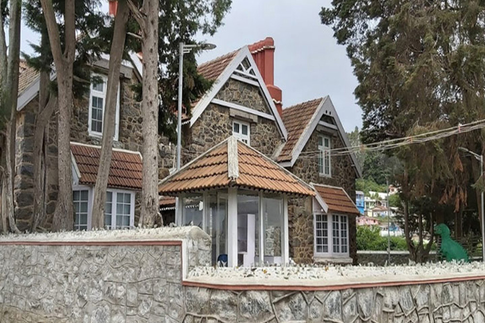

- Established in the year 1848 by William Graham McIvor the Botanical Garden is home to over 650 species of flora and fauna. The garden is home to a 20 million year old tree trunk. This is a must see for visitors.
- Entrance Fee: Rs 35 (Adult)
- Timings: 7AM to 7 PM
Places to Visit
- Home
- Places to Visit
Botanical Garden
Rose Garden
- The Rose Garden is situated in the town of Ooty and stages over 2800 varieties of roses. This a must see for visitors.
- Entrance Fee:
Rs 30/- (Adult)
Rs. 15/- (Child) - Timings: 7AM to 7 PM

Doddabetta
- Doddabetta is the highest mountain in the Nilgiri Hills at 2,637 meters (8,650 feet). It is 9 km from Hotel Lakeview, on the Ooty-Kotagiri Road. Doddabetta telescope house is surrounded by Sholas with awesome panoramic views of the mountain ranges.
- Entrance Fee:Rs. 5 per person
- Timings: 8:30 am to 6:30 pm (Daily)

Ooty Lake
- Bordering Hotel Lakeview and Constructed in the year 1824 by Mr. John Sullivan. The boathouse offers a large number of activities for its visitors such as Boating (Row Boats, Paddle Boats & Motor Boats), Horse Riding, Toy Train, Amusement Park etc… This is a must see for visitors.
- Entrance Fee:Rs. 5 per person
- Timings: 8:30 am to 5:30 pm (Daily)
Government Museum
- Located on the Ooty – Mysore highway just 3 kms from Hotel Lakeview, is a storehouse of interesting relics of tribal art and culture. It offers a great way to learn about the history of ancient Ooty and India
- Entrance Fee:Free Entry
- Timings: 10:00 am to 1:00 pm and 2:00 am to 5:00 pm
Closed on Friday, second Saturday and National Holidays

Ketti Valley View
- Just 7 kms from Ooty on the Ooty-Coonoor road is the Ketti Valley viewpoint. This viewpoint offers stunning sights of villages down the Ghats.
Arboretum Tree Garden
- Situated in the city center just 2 kms from Hotel Lakeview, on the road to Fernhill is this beautiful treasure trove of trees.
- Entrance Fee:Free Entry
- Timings: 9:00 AM to 5 PM

St. Stephens Church
- St. Stephen’s Church, built in 1829, is the oldest church in this region. The stained glass windows are a visual delight. The large wooden beams used to construct the church were carried by elephants from a distance of 120 kilometres from Tipu Sultan’s Palace in Mysore. Just 2.5 kms away from Hotel Lakeview.
- Entrance Fee:Free Entry
- Timings: 10.00 am - 1.00 pm and 3.00 pm - 5.00 pm
Monday to Saturday

Karnataka Siri Horticulture Garden
- This garden is just 300 meters away from Hotel Lakeview and is just a 5-minute walk. With over 50000 pots of flowers, Topiary gardens, sprawling lawns, flower beds, Italian garden, Maze garden, Rose Garden, Sunken Garden, Water bodies and Tea gardens, this is a must see for all visitors.
- Entrance Fee:
Rs 30 per Person (Adults)
Rs 15 per Person (Children) - Timings: Mon-Fri: 9:00 am to 6:00 pm, Sat-Sun: 9:00 am to 6:00 pm

Golf Course
- Ootacamund Gymkhana Club, situated on the rolling Wenlock Downs at a height of 7800 ft above sea level, is one of the finest natural golf courses in the world. The Ooty Golf Course is one of the only 4 natural golf courses of the world established in 1860. This is just 3 kms away from Hotel Lakeview.
6th Mile
- 6th Mile, as the name suggests, is located 6 miles from Hotel Lakeview and falls on the way to Pykara. Also known as Shooting Spot, 6th Mile offers scenic views replete with thick green forests. The 6th Mile has featured in many Indian movies.
Pine Forests
- Pine Forest is situated between Ooty and Thalakunda just 9 kms from Hotel Lakeview. The towering pine trees are arranged in a small downhill area and the forest makes for a delightful scenic view offering an atmosphere of peace and tranquility. The Kamaraj-Sagar Dam, a popular picnic spot, is also visible from the bottom of the hill.

Kamaraj Sagar Dam
- Kamaraj Sagar dam is located about 9 kilometers from Hotel Lakeview on the Ooty-Gudalur highway. A popular picnic spot, the dam offers scenic views and is surrounded by lush green forests. It is also a great spot for fishing.
Pykara Waterfalls
- Pykara Waterfall situated 20 kilometres from Hotel Lakeview, is a great picnic spot with a lake, pine trees and of course, the waterfall. The Pykara lake also offers boating for its visitors.
Mudumalai Wildlife Sanctuary & Tiger Reserve
- 48 Kms from the Hotel Lakeview is India’s finest Wildlife Sanctuary & Tiger reserve. Offering exciting Elephant rides, Jungle safaris and treks Mudumalai Wildlife Sanctuary & Tiger Reserve is a must visit for wildlife enthusiasts. The protected area is home to several endangered and vulnerable species including Indian elephant, Bengal Tiger, Gaur and Indian Leopard. There are over 266 species of birds in the sanctuary, including critically endangered Indian White-rumped Vulture and long-billed vulture.
Please contact the Tiger Reserve & Wildlife Sanctuary Office for further details Tel: 0423 244 5971
Nilgiri Mountain Railway:
- The Nilgiri Mountain Railway built by the British in 1908 is a UNESCO World Heritage Site. It’s a 46-kilometre beautiful cogwheel train journey that starts from Ooty and goes all the way to Mettupalayam. The train travels through 208 curves, 16 tunnels, and 250 bridges. From 7200 ft to 300 feet. The Nilgiri Mountain train is a must do.
-
Fee: Rs. 24 for second class and Rs. 142 for first class, one way
Please confirm train timings and prices: Ooty- 0423-2442246 or 139
The Train Timings
Sim’s Park
- A beautiful botanical garden located in Coonoor just 17 kms from Hotel Lakview. Establised in 1874 by JD Sim’s and Major Murray, Sim’s Park is home to a variety of unusual species of plants, which have been brought here from different parts of the world.
- Entrance Fee:Rs. 5 per person
- Timings: 8:30 am to 6:30 pm (Daily)
Lambs Rock
- Named after Capt. Lamb, this popular tourist spot is located about 25 kilometers form Hotel Lakeview, Lamb’s Rock offers spectacular views of the lush forest, Nilgiri hills, coffee and tea estates. Lamb’s Rock also makes for an excellent picnic spot and it is situated on the way to Dolphin’s Nose.
Dolphins Nose
- Dolphin’s Nose is a viewpoint situated about 22 kms from Hotel Lakeview. Dolphin’s Nose is a unique rock formation and its peak resembles a dolphin’s nose from where it gets its name.
Lady Canning Seat
- Situated 29 km from Hotel Lakeview. The breathtaking site is named after Lady Charlotte Canning who during the 1857 uprising spend her time while her husband Lord Canning convalesced.
Laws Falls
- The Law's Falls is a small waterfall located on the Coonoor - Mettupalayam just 4 kms from the Conoor town and 21 kms from Hotel Lakeview.
The Doorg (Pakkasuramalai)
- Droog Fort is a historic fort located 32 kilometres from Hotel Lakeview, The fort was used as an outpost by Tipu Sultan in the 16th century. Today, the fort is in ruins, with only one wall remaining.
Katery Falls & Dam
- Katery Falls is approximately 27 km from Hotel Lakeview. At 180 feet in height, Katery Falls is third largest waterfall in the Nilgiris.